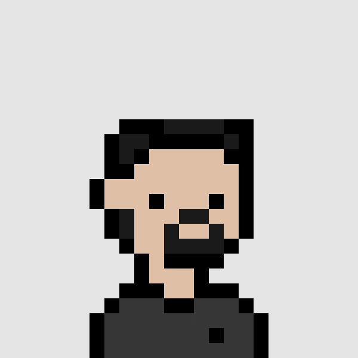

yup, that's me
Hey, I'm Jose.
Results-driven Cybersecurity professional and current bootcamp participant, well-versed in a comprehensive range of cybersecurity principles and best practices. With a focus on optimizing solutions, I bring expertise in network security, IAM, threat intelligence, penetration testing, GRC, vulnerability management, and incident response. Technical proficiency includes Linux, Squid Proxy, Apache, and familiarity with leading-edge tools. Certified in CompTIA Cloud+ and Okta, I am actively seeking a role in Cybersecurity to apply these skills and contribute to a secure digital landscape. Beyond tech, I'm a music producer and pianist, infusing creativity into my tech journey. Fluent in English and Spanish. Eager to collaborate and make a meaningful impact on the evolving cybersecurity frontier. Let's fortify the future together!
My Skills
Network Security and Administration
- IAM
- Threat Intelligence
- Penetration Testing
- GRC (Governance, Risk, and Compliance)
- Vulnerability Management
- Incident Response
- MITRE ATT&CK Framework
- NIST SP 800-53 Security Controls
Administrative
- Information Briefing
- Agile Development and Planning
- Documentation and Reporting
Languages
- English – Fluent
- Spanish – Fluent